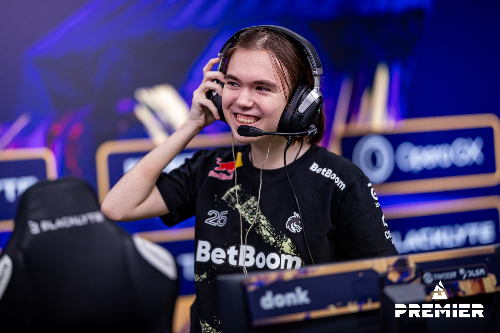
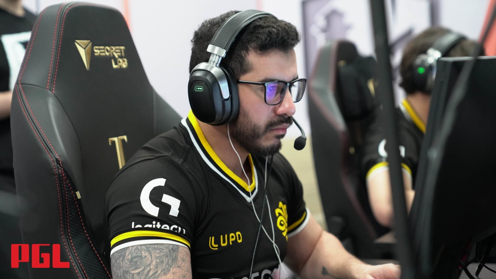
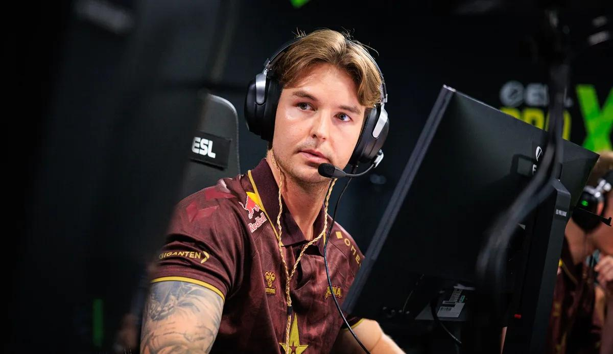
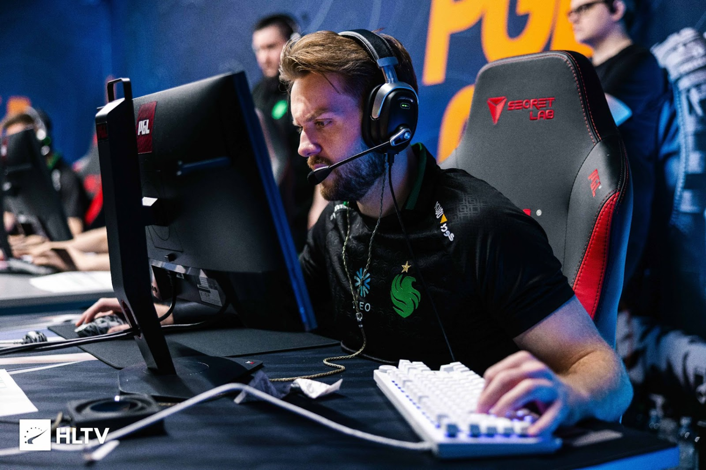

ZywOo
Team Vitality • FrançaUm dos jogadores mais completos da história recente, conhecido por sua consistência absurda, leitura de jogo e impacto em momentos decisivos.
CS2 • ELITE COMPETITIVA
Conheça os jogadores que dominam o cenário atual e as lendas que ajudaram a construir a história do Counter-Strike.
DESTAQUES ATIVOS
Nomes que representam o presente do Counter-Strike competitivo, combinando talento, impacto e protagonismo nos maiores campeonatos.
Um dos jogadores mais completos da história recente, conhecido por sua consistência absurda, leitura de jogo e impacto em momentos decisivos.

Pilar da FURIA e um dos jogadores brasileiros mais consistentes do cenário, combinando precisão, calma e impacto em jogos internacionais.

Jovem prodígio da AWP, conhecido por reflexos absurdos, jogadas criativas e por se tornar protagonista ainda muito cedo no Tier 1.

Entry fragger agressivo e peça importante no projeto jovem da MOUZ, abrindo espaço e ditando ritmo em partidas de alto nível.

Um dos maiores fenômenos recentes do CS2, com estilo explosivo, números impressionantes e presença constante em debates sobre o melhor do mundo.
LEGADO
Antes do presente dominar os holofotes, esses jogadores ajudaram a definir eras, estilos e momentos que marcaram o cenário mundial.

Líder histórico do CS brasileiro, bicampeão de Major e uma das figuras mais influentes da história dos eSports no Brasil.

Considerado por muitos o maior jogador da história do Counter-Strike, marcou uma geração com domínio individual quase absurdo.

Um dos brasileiros mais premiados da história, bicampeão de Major e eleito melhor jogador do mundo em dois anos consecutivos.

Um dos pilares da era mais dominante da Astralis, símbolo de disciplina, eficiência e inteligência dentro do servidor.

Um dos riflers mais talentosos da história, conhecido por mira precisa, impacto individual e longevidade no mais alto nível.